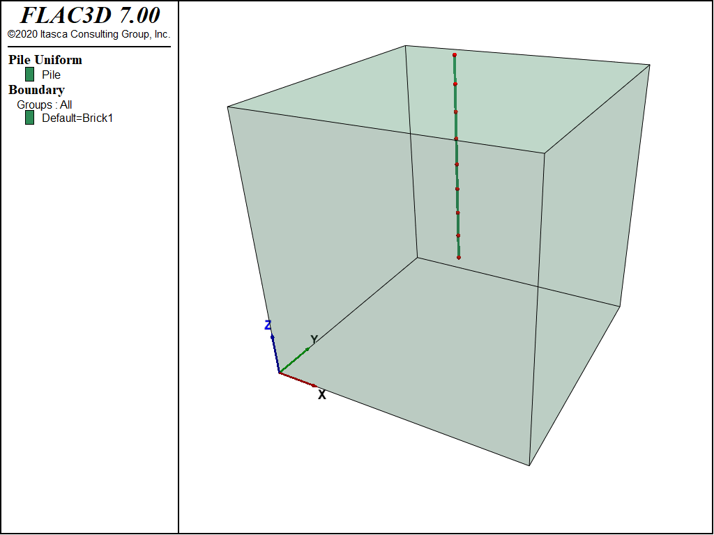
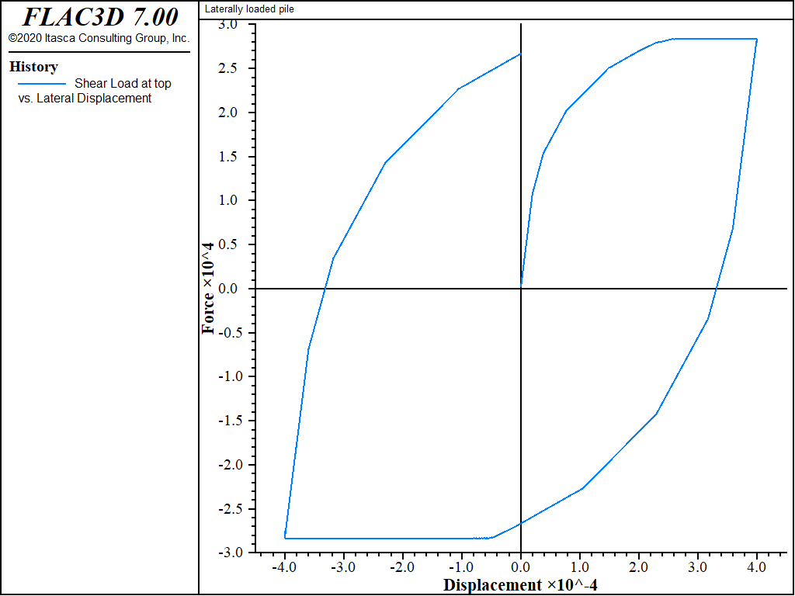
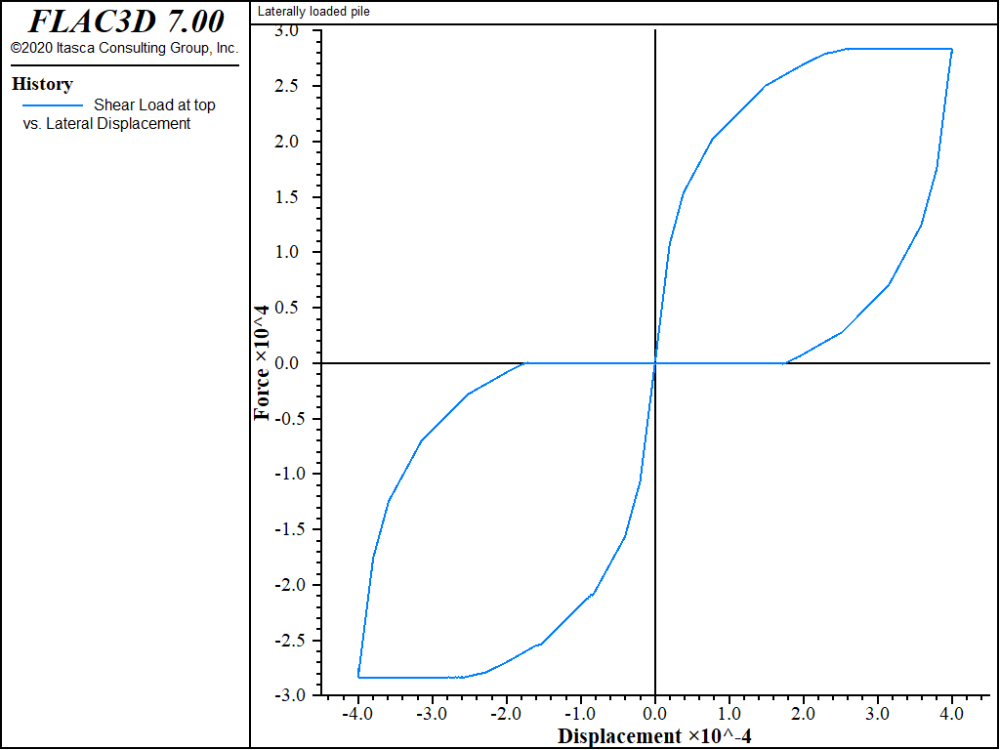
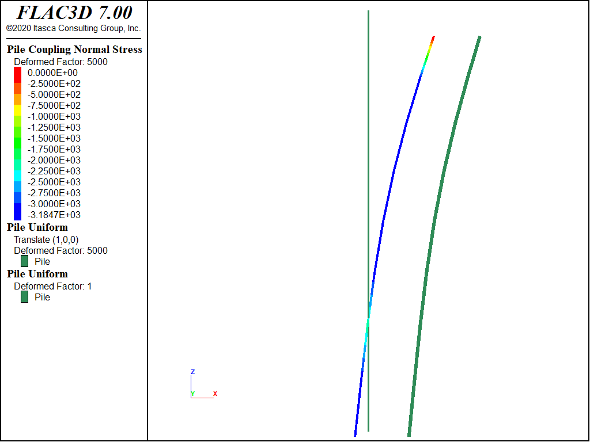
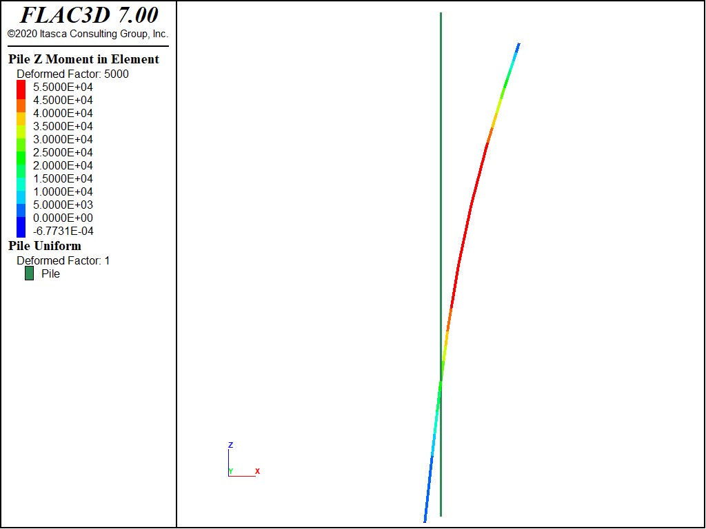

横向受荷桩
问题描述
注意
要在 FLAC3D 中查看此工程，请使用菜单命令 。选择“Structure/Pile/LaterallylLoaded”，再选择“LaterallyLoaded.f3prj”即可加载。所使用的主数据文件（main data files）在本示例末尾给出。其余数据文件可在该工程中找到。
对竖直桩在桩顶施加侧向位移。桩先向一个方向推移，然后反向加载，桩再向相反方向推移。该加载循环先在不存法向间隙的情况下进行，然后在间隙完全生效（100%）的情况下进行。结果展示了桩结构单元在桩与介质之间存在间隙和无间隙两种情况下对侧向荷载的响应。桩顶节点用分组名称 返回顶部（Top） 标记。
在 FLAC3D 数据文件中，桩（由 8 个桩单元组成）创建于土块中心，桩顶节点位于土体表面以上一米（见 图 1（Figure 1））。我们希望向该顶部节点施加 1 × 10-8 的恒定侧向速度，使该节点沿土块的对角线方向移动。该方向在全局坐标系中由向量 (1,1,0) 描述。我们通过 结构节点初始化速度（structure node initialize velocity） (0.707e-8,0.707e-8,0) range group 'Top' 命令指定该节点速度条件。
我们还必须使用 structure node fix 命令为该节点指定适当的速度固定条件，这要求在
节点局部坐标系（而非全局坐标系）中指定固定方向。由于顶部节点被桩单元使用，其
节点局部坐标系将使 \(x\) 轴与桩轴线对齐，
而 \(yz\) 轴位于桩横截面内。在我们的模型中，顶部节点的节点局部
坐标系使得 \(x\) 轴指向全局 \(z\) 方向的负方向，
\(y\) 轴指向全局 \(y\) 方向的正方向，
\(z\) 轴指向全局 \(x\) 方向的正方向。
节点局部坐标系的方向可通过将“Pile”绘图项的“System”属性
设为“Node”来显示。
请注意，此方向在一组计算循环开始时、或执行 执行计算时步（model cycle） 0 命令时自动设定。因此，我们用以下命令将侧向速度固定为常数
struct node fix velocity-y range group 'Top' ; 固定侧向平面内的速度，顶部节点
struct node fix velocity-z range group 'Top'
我们希望监测作用于顶部节点的施加荷载，并绘制该值随顶部节点位移的变化。若以准静态方式施加荷载，则作用于顶部节点的施加荷载将等于顶部桩单元上端所受的剪力。剪力以桩单元坐标系表示（见桩的符号约定（Pile Sign Conventions））。为获得沿施加荷载的对角线方向作用的剪力，必须利用 direction-y 性质旋转桩单元坐标系的 \(y\) 轴，使其沿该对角线方向。
然后可以使用 structure pile history 命令监测所施加的侧向荷载：
struct pile history name='force' force-y position (5.5,5.5,12) ; 顶部剪力


图 1：土体块体与竖直桩。
所施加位移的 \(x\) 分量和 \(y\) 分量可通过单独的 structure node history 命令监测；但我们希望监测沿对角线方向发生的侧向位移。为此，我们使用 FISH 函数侧向位移（lateralDisp），它利用 结构节点全局位移（struct.node.disp.global） 函数访问位移的 \(x\) 分量和 \(y\) 分量。
对于本问题，法向耦合弹簧的黏聚力和摩擦分别设为 0.01 MN/m 和零。无间隙情形通过在 structure pile property 命令中指定 coupling-gap-normal 关闭（off） 来运行。全间隙情形通过指定 coupling-gap-normal 开启（on） 来运行。图 2（Figure 2） 给出了无间隙情形下桩顶法向荷载随位移的变化，图 3（Figure 3） 给出了全间隙情形的结果。在侧向加载过程中，两种情形下的极限法向力相同。然而，法向荷载随位移的时程不同。在全间隙模型中，必须先闭合间隙，然后才能产生反向的力。当桩回到初始位置时，桩即被卸载。


图 2：无间隙时桩顶剪力荷载与侧向位移的关系。


图 3：全间隙时桩顶剪力荷载与侧向位移的关系。
通过研究第一加载阶段结束时（初始施加位移为 0.4 mm）的模型，可进一步了解该系统的行为。在该阶段，桩的上部沿 (1,1,0) 方向压缩土体，而桩的下部沿负 (1,1,0) 方向压缩土体。节点位移、桩中弯矩以及法向耦合弹簧的应力和屈服状态图（见图 4（Figure 4） 和 图 5（Figure 5））证实了这一加载模式，并表明荷载反向点上方和下方的法向耦合弹簧正在屈服。由于顶部节点位于土体表面以上，顶部单元上的法向应力为零。由图 4（Figure 4） 可见，屈服节点处的法向应力等于 3.185 kPa。这等于法向黏聚力 \(c_s\) 除以周长 \(p\)，与预期一致。桩的响应也可通过 FISH 获取。


图 4：法向耦合弹簧的应力与屈服状态（未变形及放大 5000 倍变形，第一加载阶段末，间隙开启）。


图 5：弯矩分布（未变形及放大 5000 倍变形，第一加载阶段末，间隙开启）。
数据文件
LaterallyLoaded.dat
model new
model large-strain off
model title "Laterally loaded pile"
; 创建网格单元
zone create brick size 8 8 8 edge=11
zone face skin ; 标记模型边界
; 指定材料模型和参数
zone cmodel assign elastic
zone prop bulk=5e9 shear=1e9 density=2000
; 边界条件
zone face apply velocity-normal 0 range group 'East' or 'West'
zone face apply velocity-normal 0 range group 'North' or 'South'
zone face apply velocity-normal 0 range group 'Bottom'
; 初始条件
model gravity 10
zone initialize-stresses ratio 0.6,0.4
model solve ratio-local 1e-4 ; 应为瞬时完成
; =======================================================
; 在土块中心创建桩
struct pile create by-line (5.5,5.5,12.0) (5.5,5.5,4.0) segments=8
struct node group 'Top' range position-z 12 ; 标记顶部节点
struct pile property young=8.0e10 poisson=0.30 cross-sectional-area=0.7854 ...
moi-polar=9.82e-2 moi-y=4.91e-2 moi-z=4.91e-2 ...
perimeter=3.14 ...
coupling-stiffness-shear=1.3e11 coupling-cohesion-shear=1.0e10 ...
coupling-friction-shear=0.0 coupling-stiffness-normal=1.3e09 ...
coupling-cohesion-normal=1.0e04 coupling-friction-normal=0.0 ...
coupling-gap-normal=off ...
direction-y=(1,1,0)
; 使剪力 Fy 与对角线方向一致
; =======================================================
; 用于求顶部节点侧向位移的 FISH 函数
[global topNode = struct.node.near(5.5,5.5,12)]
fish define lateralDisp
local disp = struct.node.disp.global(topNode)
return math.sqrt(disp(1)^2 + disp(2)^2) * math.sgn(disp(1))
end
; =======================================================
struct pile history name='force' force-y component-id 1 ; 顶部剪力
fish history name='disp' lateralDisp ; 侧向位移
; =======================================================
struct mechanical damping combined-local
struct node fix velocity-y range group 'Top' ; 固定侧向平面内的速度，
; 顶部节点
struct node fix velocity-z range group 'Top'
; 沿 (+) 对角线方向移动
struct node initialize velocity (0,0.707e-8,0.707e-8) local range group 'Top'
model save 'Initial'
; =======================================================
; 运行无间隙工况
; =======================================================
model cycle 40000 ; 位移 +4e-4
model save 'NoGap-1'
; 沿 (-) 对角线方向移动
struct node initialize velocity (0,-0.707e-8,-0.707e-8) local range group 'Top'
model cycle 80000 ; 位移 -8e-4
model save 'NoGap-2'
; 沿 (+) 对角线方向移动
struct node initialize velocity (0,0.707e-8,.707e-8) local range group 'Top'
model cycle 40000 ; 位移 +4e-4
model save 'NoGap-Final'
; =======================================================
; 运行全间隙工况
; =======================================================
model restore 'Initial'
struct pile property coupling-gap-normal on
model cycle 40000 ; 位移 +4e-4
model save 'FullGap-1'
; 沿 (-) 对角线方向移动
struct node initialize velocity (0,-0.707e-8,-0.707e-8) local range group 'Top'
model cycle 80000 ; 位移 -8e-4
model save 'FullGap-2'
; 沿 (+) 对角线方向移动
struct node initialize velocity (0,0.707e-8,.707e-8) local range group 'Top'
model cycle 40000 ; 位移 +4e-4
model save 'FullGap-Final'
| 这些内容对您有帮助吗？… | FLAC3D © 2019, Itasca | 原文更新于 2020 年 10 月 8 日 |